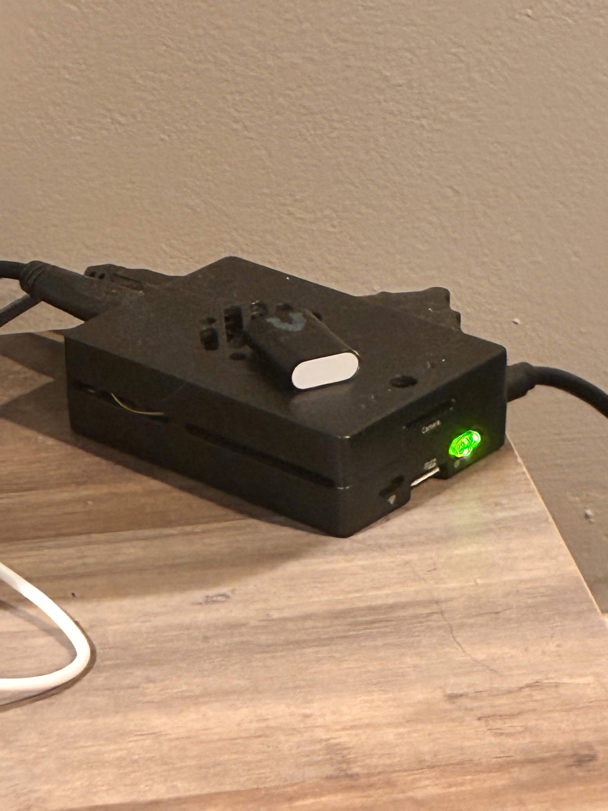
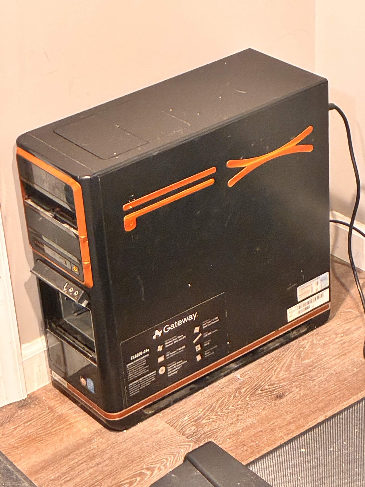

services
where do these run?
these service run on my pi 5 called suwi! it's a tiny little device and its awesome :3
on the semi-public copyparty, i explain why it's named suwi if you're interested.
i also have a big server computer called soweli! it handles all my NAS and storage needs, and eventually will probably host some services of its own!
the servers!

